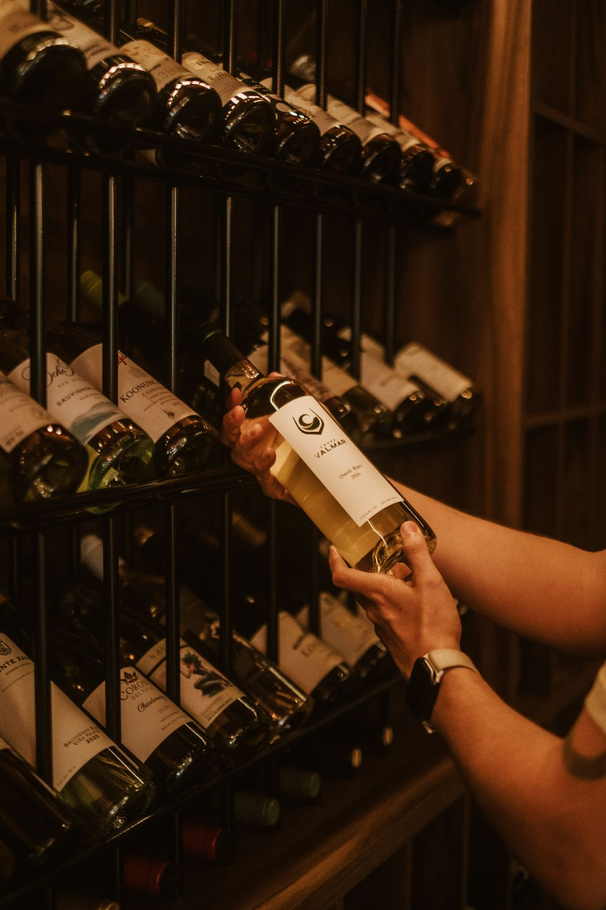

The merchant
Clara Whitfield, MS.
Twenty years in wine: cellar hand, sommelier, wine director — and now an independent merchant with one small book of old bottles, each of which I have held up to the light myself.
The short version
I started at nineteen as a cellar hand in Bath, washing glasses and carrying cases, in a restaurant whose wine list was longer than its menu. It was the cellar that taught me: the bottles at the back, dusty and undated in the stock book, were the interesting ones — and the least honestly described.
I worked up the floor the slow way — commis sommelier, sommelier, head sommelier — and passed the Master Sommelier diploma in 2016, at the third attempt; the first two failures taught me more than the pass did, mostly about the difference between knowing wine and knowing a bottle. From 2017 I was wine director for a small hotel group with houses in London and Copenhagen, buying mature wine at a scale where a vague description costs real money. I learned to ask for the paper before the tasting.
In 2021 I left and set up Grand Vintage: a small, independent practice that buys mature wine on provenance, sells it on description, and directs wine programmes for independent restaurants that want old bottles on their lists without the theatre. The book holds a few hundred bottles at a time. That is deliberate. A book I cannot hold in my head is a book I cannot stand behind.

The working page
How a bottle is vetted.
Four passes, in this order, before any bottle enters the book. A bottle can fail at any pass, and the failure is recorded either way.
The paper first
Invoices, cellar records, auction lots, merchant receipts — anything that places the bottle somewhere, with someone, at a date. Gaps are not automatic failures, but they are always declared, and they always move the price. No paper at all for a famous bottle is a refusal, not a discount.
The bottle in hand
Fill level against the light, capsule read for print, crimp and corrosion, label and back label checked against the era they claim, sediment and colour read through the glass. Corks are never drawn to inspect — opening a bottle to check it destroys the thing being checked.
The parcel test
Bottles that have lived together should look alike. Levels consistent within a few millimetres across a parcel is the signature of one cellar and one history. One bottle standing far proud of its siblings is a question, and it gets asked.
Priced for what is unknown
Every description separates what was seen from what was said by the seller, and the price carries the unknowns — a storage gap, an uninspectable cork, a window that is judgement rather than fact. If the unknowns cannot be priced, the bottle is not bought.
Storage
Where the book lives.
The book is held in a bonded warehouse in Kent, in a section kept at 12–14 °C through the year, at 65–75% relative humidity, in darkness, away from vibration and from anything with a smell of its own. Bottles lie on their sides so the cork stays wet and swollen; a dry cork shrinks, and a shrunken cork is how air — and then ullage, and then a tired wine — gets in. Cases are opened on arrival, never on dispatch, so the inspection in the sheets is of the bottle you will actually receive.
If you buy bottles to lay down rather than to drink, I will store them in the same section at £14 a case per year, with an annual condition note — levels re-read and reported, in writing, whether the news is good or not.
The honesty page
What this practice will not promise.
Drinking windows are judgement
Every window in this book is my judgement, from the bottle's level, its provenance and twenty years of opening wines like it. It is labelled as judgement wherever it appears. Anyone who gives you a drinking window as a fact is selling you something.
Ullage, in plain words
Ullage is the gap between the wine and the cork, and it grows as wine leaves the bottle through the cork over the years. A little is the price of age. A lot means air has had time to work on the wine. The fill table on the cellar page gives the terms and what each does to the price here.
Corked bottles
Roughly one bottle in twenty of this age is corked, or tired beyond its description, through no one's fault. Open the bottle within a year of buying it, tell me within a week of opening, and I will credit it in full. I would rather lose the money than the argument.
No investment promises
Nothing in this book is sold as an investment, and no bottle's future price is promised, hinted at or discussed. Some old wine rises in value; some falls; all of it was made to be drunk. Buy what you would be glad to open.
One side of the bottle
I am paid by one side of any transaction — the buyer, the seller, or the restaurant — never by two. If a merchant or producer pays me anything in connection with a bottle, the client hears about it in writing before the bottle moves.
Terms, briefly
Payment before dispatch. Unopened bottles may be returned within 14 days at the buyer's cost, under distance-selling rules. Prices include VAT and duty. Storage, commission and day rates are as printed on the cellar page and do not change between the enquiry and the invoice.
Begin
Ask about a bottle.
One email reaches the cellar. If the answer is that I cannot help, you will get the name of someone who can, and the reason.